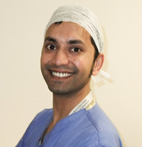

Mr Mahbub (Mabs) Alam was appointed a Consultant in Trauma & Orthopaedic Surgery at Barking, Redbridge, Havering Hospitals NHS Trust in April 2014. He grew up in Bethnal Green and read Medicine at University College London, receiving a Goldsmith’s Guild Scholarship.Mr Mahbub (Mabs) Alam was appointed a Consultant in Trauma & Orthopaedic Surgery at Barking, Redbridge, Havering Hospitals NHS Trust in April 2014. He grew up in Bethnal Green and read Medicine at University College London, receiving a Goldsmith’s Guild Scholarship.Mr Mahbub (Mabs) Alam was appointed a Consultant in Trauma & Orthopaedic Surgery at Barking, Redbridge, Havering Hospitals NHS Trust in April 2014. He grew up in Bethnal Green and read Medicine at University College London, receiving a Goldsmith’s Guild Scholarship.Mr Mahbub (Mabs) Alam was appointed a Consultant in Trauma & Orthopaedic Surgery at Barking, Redbridge, Havering Hospitals NHS Trust in April 2014. He grew up in Bethnal Green and read Medicine at University College London, receiving a Goldsmith’s Guild Scholarship.Mr Mahbub (Mabs) Alam was appointed a Consultant in Trauma & Orthopaedic Surgery at Barking, Redbridge, Havering Hospitals NHS Trust in April 2014. He grew up in Bethnal Green and read Medicine at University College London, receiving a Goldsmith’s Guild Scholarship.Mr Mahbub (Mabs) Alam was appointed a Consultant in Trauma & Orthopaedic Surgery at Barking, Redbridge, Havering Hospitals NHS Trust in April 2014. He grew up in Bethnal Green and read Medicine at University College London, receiving a Goldsmith’s Guild Scholarship.Mr Mahbub (Mabs) Alam was appointed a Consultant in Trauma & Orthopaedic Surgery at Barking, Redbridge, Havering Hospitals NHS Trust in April 2014. He grew up in Bethnal Green and read Medicine at University College London, receiving a Goldsmith’s Guild Scholarship.